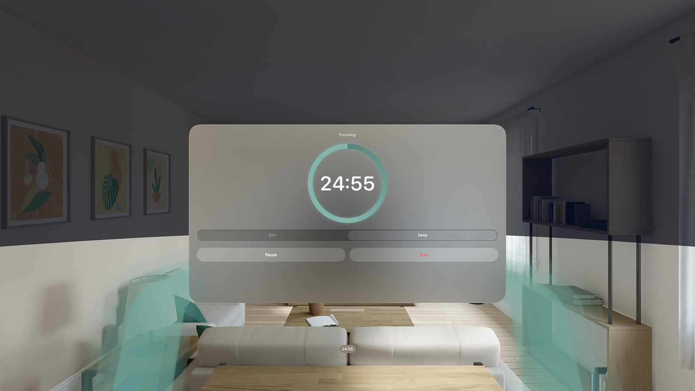
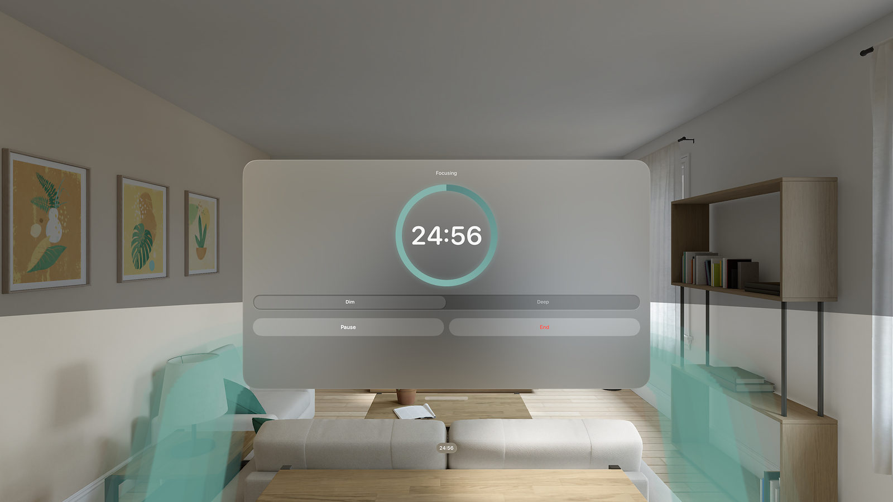
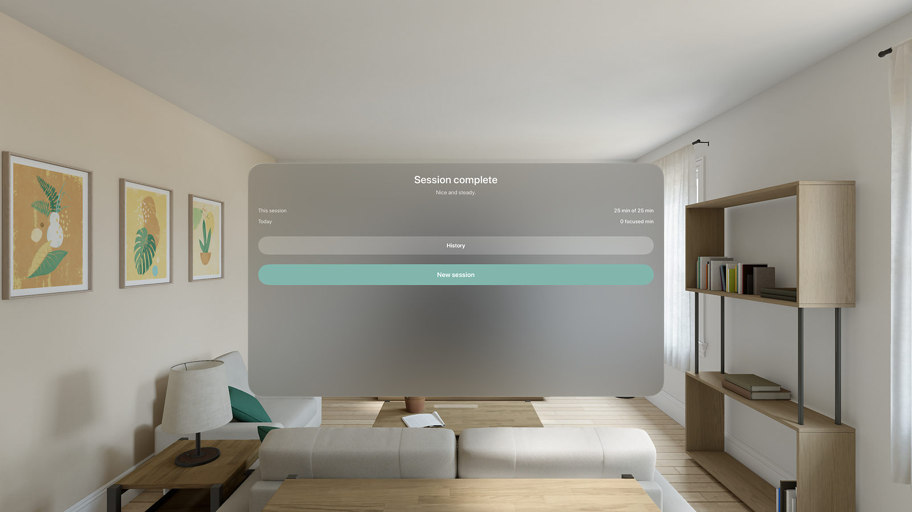

Blurzo
Dim the room around your desk.
Start a timer, and a dark virtual bubble fades in around the room, with an opening over your desk. When the time is up, the bubble fades away.

Deep mode, mid-session, on Apple Vision Pro.
The opening stays over your desk.
The name says blur, but the app does not blur the camera feed. It dims and covers the room with a virtual bubble, and leaves an opening over your desk.
On a physical Vision Pro, it can look for a table and place the opening on that surface. If it does not find one — and in the Simulator — it uses a built-in desk zone in front of you.
Dim, or Deep.
Dim takes the edge off the room. Deep is darker, for the hours when you want less of the world at the edges of your vision. Choose one before you start.

You pick the length.
Fifteen, twenty-five, fifty, or ninety minutes, or a length you set yourself, up to three hours. A small timer stays near the desk, so you can pause, resume, or end early. When time is up, a short chime plays and the bubble fades away.
- 15minutes
- 25minutes
- 50minutes
- 90minutes
- Customup to 3 hours
Then you can see what you did.
After a session, Blurzo shows how long you worked, plus totals for today and all time. History lives on the headset. There is no account to create, and nothing is sent off the device. It works without a network connection.

When the timer ends, the bubble lifts and you can start another session or look back at your history.
For Apple Vision Pro.
A visionOS app, coming to the App Store. No account, and nothing leaves your headset.
Download on the App Store